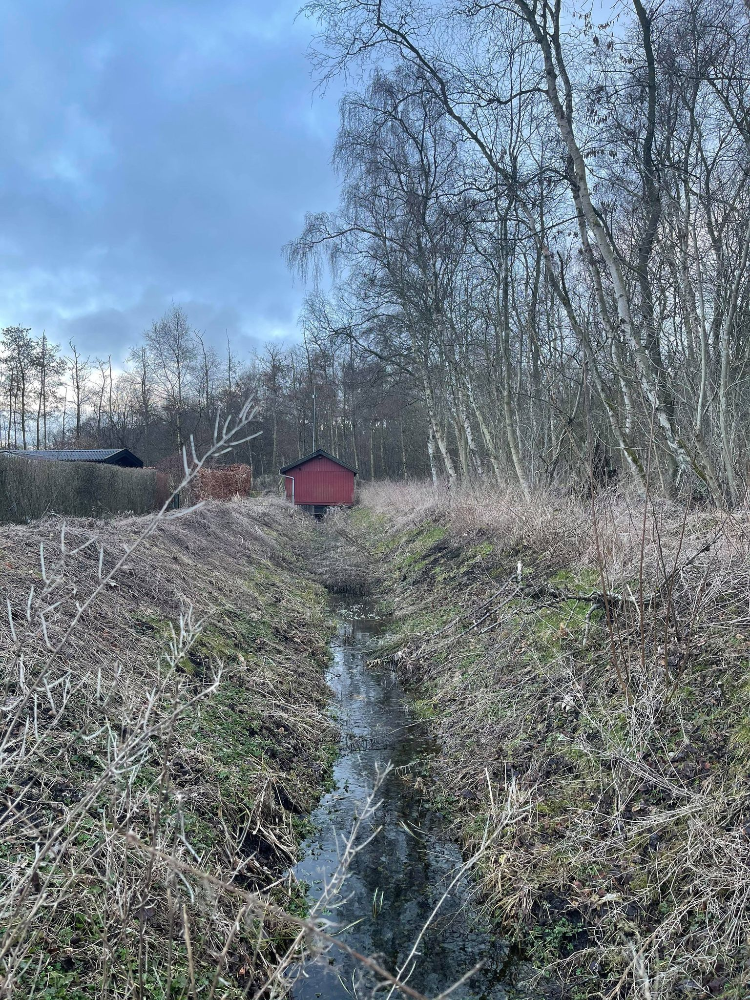
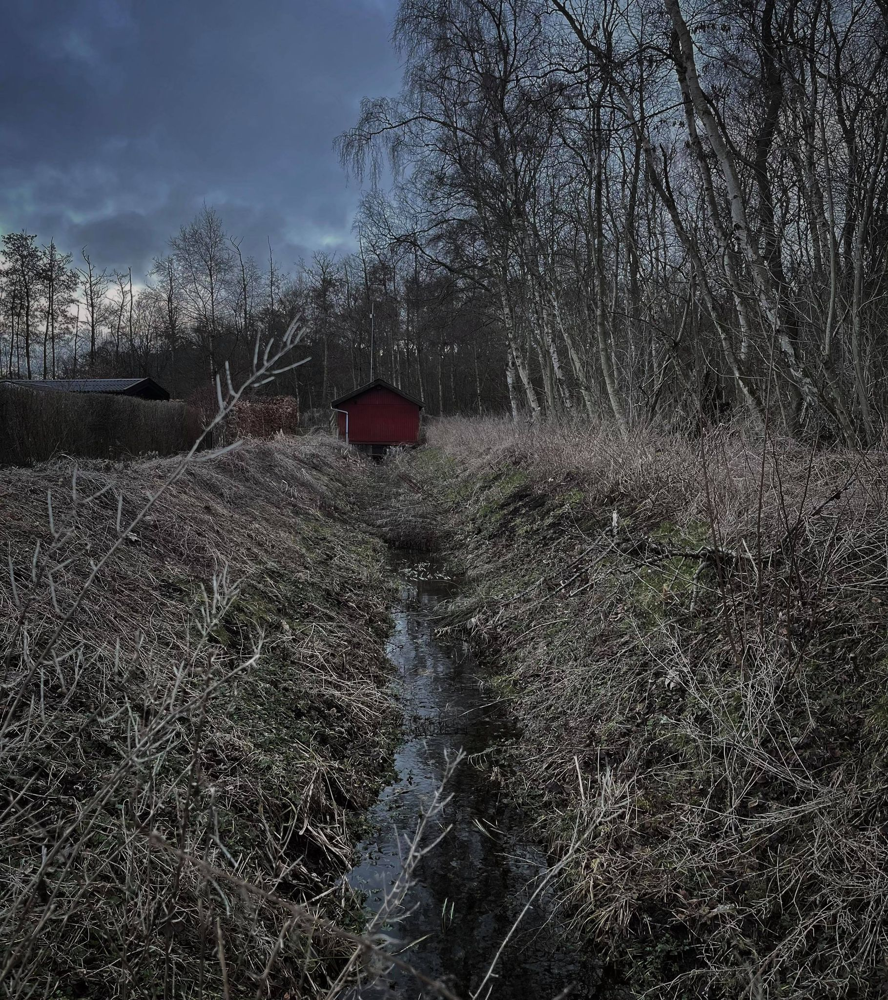
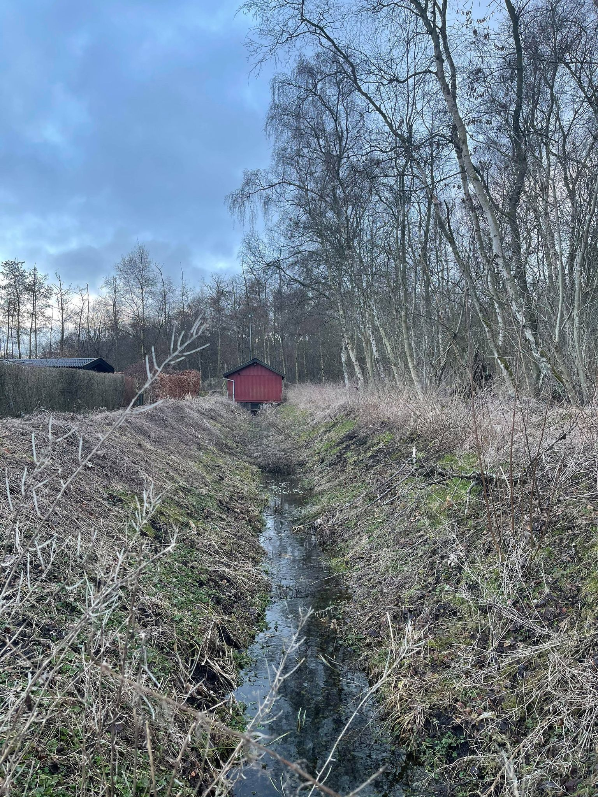
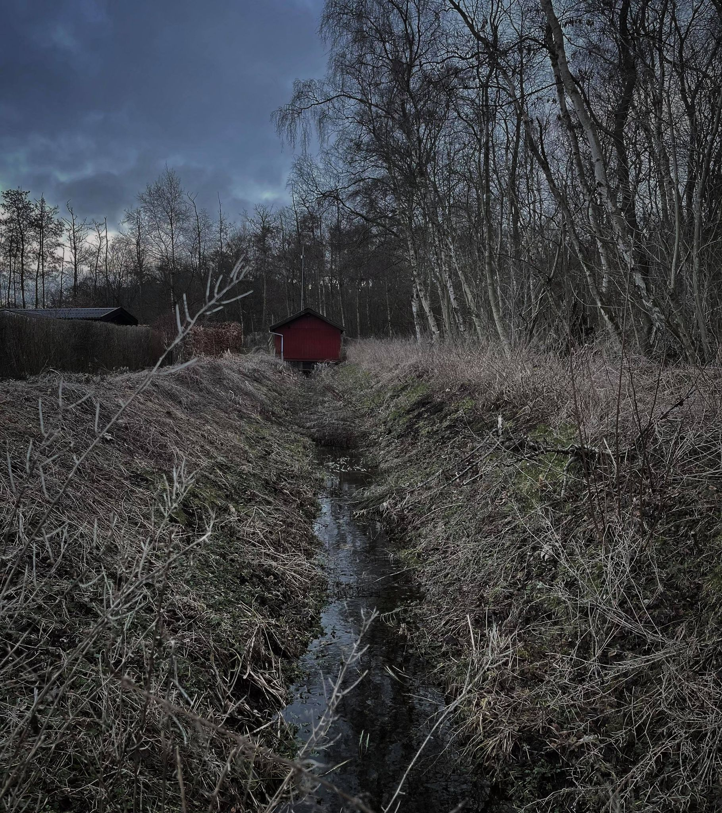

Back to cases
Photography and editing
In these pictures, i tried to play with moods and how editing could change the expression of a picture. Unfortunately it was very cloudy on the day of these, so i didn’t quite get the pictures i wanted - the effekt was supposed to go from bright to a darker, horror kind of mood.
 


